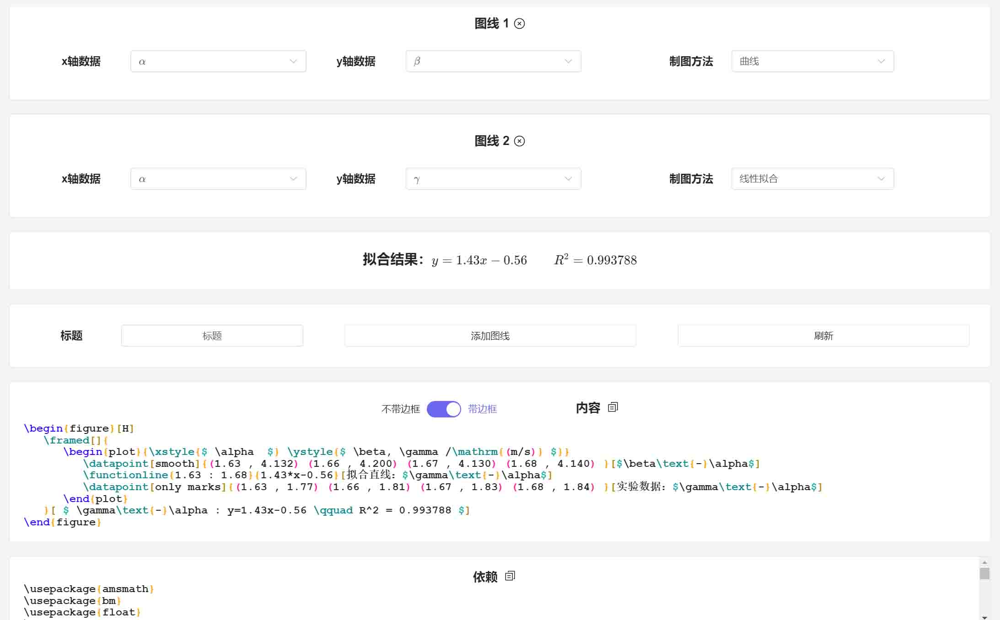

欢迎使用 Lab-Assistance
- 还在因为搞不清楚有效数字而烦恼吗？
- 还在疲于计算各种统计量吗？
- 还在为了图表设计而头疼吗？
如果你是一名 LaTeX 用户，那么 Lab-Assistance 将会是一个很好的选择！
功能预览
Lab-Assistance 中的所有数据都遵循着有效数字的运算规则。
作为不使用 LaTeX 的用户，您关注的可能是这些功能：
有效数字、不确定度、各项统计量的参考文档
自动计算统计量
间接数据的批量计算
不确定度的自动推断
而作为 LaTeX 用户，Lab-Assistance 还提供如下的实用功能：
生成表格代码
编译结果：
生成绘图代码

编译结果：
Lab-Assistance 内部提供了详细的功能说明。更多的功能，就请各位自己探索了。